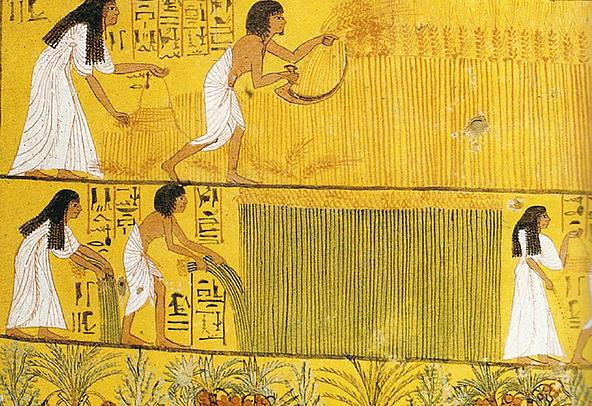

Trang phục của người Ai Cập cổ đại được làm từ bông, len hay da của động vật nhưng các loại trang phục hầu hết được chế tác từ vải lanh. Một loại vải nhẹ và thoáng mát phù hợp với khí hậu nóng tại Ai Cập. Đa số thì màu được ưa chuộng sẽ là màu trắng nhưng họ cũng có các màu sắc khác như đỏ, xanh và vàng. Quần áo với họ chủ yếu là để quấn quanh người và cố định bằng cách khâu hay buộc lên cơ thể. Có cả những sản phẩm làm từ len nhưng rất hiếm thấy bởi vì trong các ngôi mộ thì các sản phẩm làm từ động vật không được sử dụng. Vải lanh được làm từ cây lanh – một loại cây được trồng dọc theo sông Nile.
